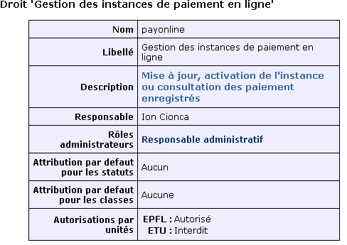
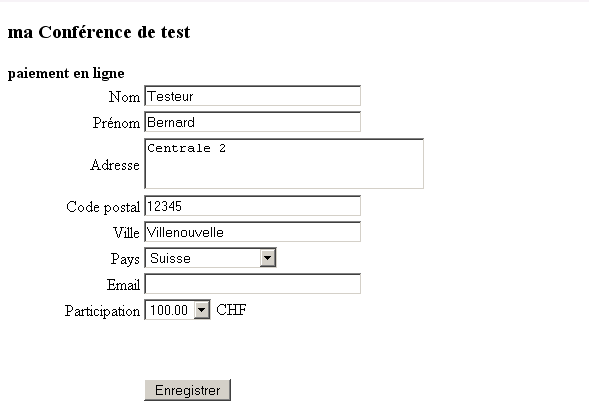
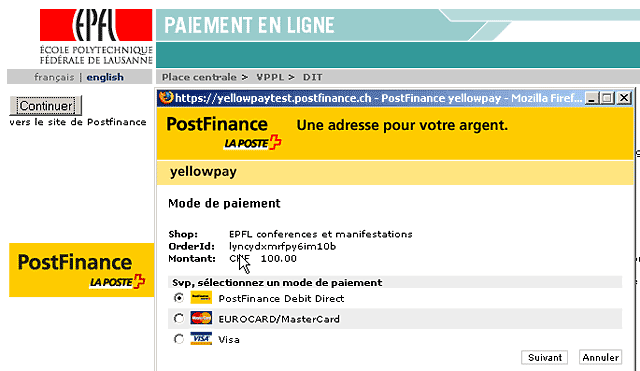
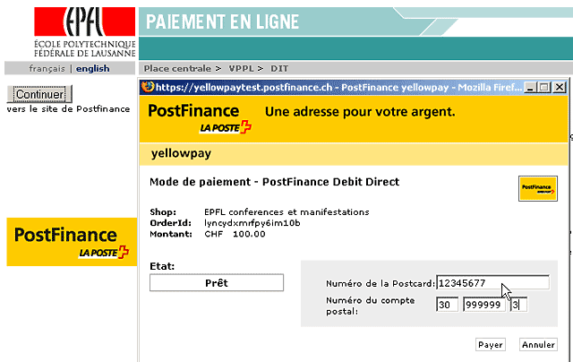
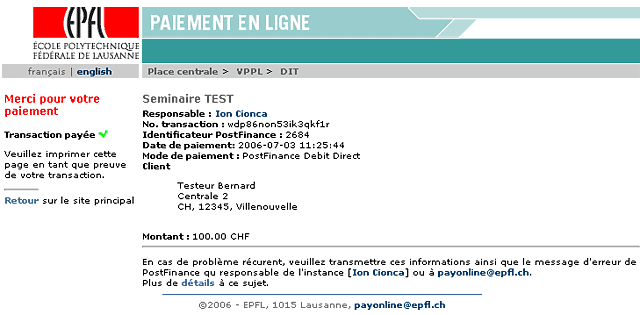

| Place centrale > VPPL > DIT |
| french only |
|
||||
Vous avez une manifestation, conférence organisée par votre unite et vous devez pouvoir encaisser le prix des prestations offertes. Le service de paiement en ligne "payonline.epfl.ch" vous met à disposition un canal d'encaissement électronique basé sur un service PostFinance.
Ce service est en francs suisses (CHF) et acepte les moyes suivants de paiement :
Le service est soumis au droit payonline dont voici la description :

Le responsable administratif de l'unité doit donner ce droit aux personnes censées de gérer l'administration des conférences organisées par l'unité. Implicitement, il aussi ce droit.
Vous avez reçu le droit payonline : aller sur http://payonline.epfl.ch/ et faire votre identification GASPAR/Tequila habituelle
Un paiement/encaissement doit être basé sur un fonds financier : faire la demande en suivant le lien "demande de fonds" si votre unité n'en possède pas un. Le formulaire de demande de fonds préparé à ce but par le Service financier de l'EPFL doit être complété, imprimé et transmis avec autres documents de description au Service financier. Dès traîtement de votre demande, vous serez informé de la disponibilité du fonds.
Vous avez ce fonds financier : il faut créer une instance de paiement en suivant le lien "nouvelle instance" sous le menu OPERATIONS de payonline.epfl.ch :
L'instance reçoit un identificateur unique (numéro de l'instance) qui sera utilisé comme référence par le formulaire d'enregistrement (détails plus loin).
Le Service financier est averti par mail qu'une nouvelle instance est créée. Il va la valider et vous recevrez un message de confirmation. L'instance de paiement est désormais en état "inactif" mais prête pour l'étape suivante : les tests des paiements.
Le formulaire d'enregistrement doit permettre aux clients potentiels de transmettre leur identité (nom, adresse postale) au site qui gère la conférence et au pour effectuer le paiement.
Pour la création de ce formulaire vous pouvez :
Parmi les champs imposés pour le dialogue avec payonline.epfl.ch il y a le numéro de l'instance qui a été généré lors de la création de l'instance.
Tous les détails sur l'interface de programmation avec payonline...
Votre formulaire de saisie est prêt, suit l'étape de test :
A partir de ce moment le mécanisme de paiement est disponible en mode test :




Si vous avez précisé une adresse mail dans le formulaire de saisie, le service va envoyer un message à cette adresse pour confirmer le paiement.
En tant qu'administrateur de l'instance, vous pouvez consulter les transactions réussies :
Dans le menu OPERATIONS, le lien "extraction CSV" produit un fichier de type Excel des transaction effectuées.
Les essais du formulaire sont faits, vous pouvez passer désormais en mode production :
Chaque nuit, la liste des transactions est transmise au Service financier de l'EPFL : les montants des transactions enregistrées seront transférés vers le fonds des instances respectives.
Après la date de fin de l'instance, les accès interactifs depuis le formulaire d'enregistrement seront refusés. L'instance passe automatiquement en mode "archive" et ne peut plus être modifiée par l'administrateur.
Selon PostFinance, les organismes émetteurs des cartes de crédit peuvent refuser les transactions électroniques selon les particularités de certaines cartes : le possesseur doit contacter ces organismes pour plus de détails.
Le document sur les détails du processus de paiement peut donner plus d'infromations sur l'étape où le problème est arrivé afin de permettre une aide plus efficace.
2006 : epfl-kis : payonline@epfl.ch